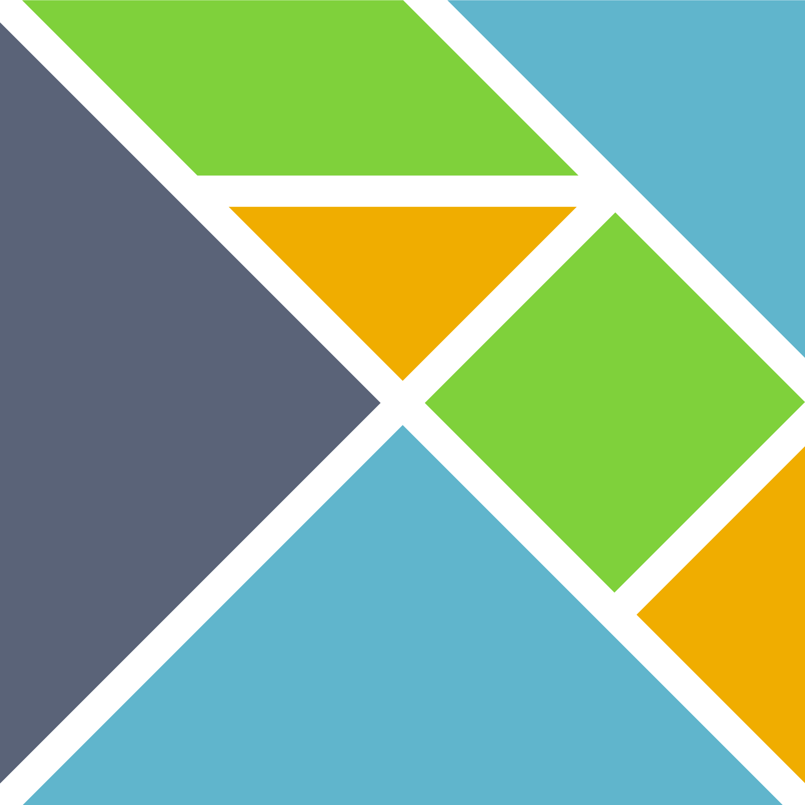

Back-end
 Rust
Rust
What I did with Rust:- Working with the fastest web-servers and frameworks (Actix, Axum, may-minihttp)
- CLI utilities
- Deno FFI
- High-perfomant parsers (pest, nom)
- Working with cryptographic algorithms
Haskell
What I did with Haskell:- APIs with Happstack
- Category Theory and type-level programming
- Packaging Haskell programs with
 Nix
Nix
 Python
Python
What I did with Python:- Web scraping
- Telegram bots/userbots
- Bitcoin and Ethereum utilities/apps
 Clojure
Clojure
What I did/worked in/with Clojure:- Telegram bots with a self-written library
- Concurrent data structures
- Macros
- Babashka
 C
C
What I did with C:- OpenDoas-cmpr
- File organization utilities
- Got the understanding of how X11 works by modifying dwm
 PHP
PHP
What I did with PHP:- An online school diary
- Integrating a website template with Bitrix
Front-end
 HTML/CSS
HTML/CSS
What websites I did:- A website for a photographer
- A food delivery website
- Flexbox
- Grid
- Animations
- Responsive design
 TS/JS
TS/JS
What I worked with in TS/JS:- React/Preact
- Vue.js
- Solid.js
- Alpine.js
- Node.js + Express apps
- Deno
- Ramda.js
- Fresh framework
Elm
Other
 Bash
Bash
What I did with Git:- Advances bash scripting
- Automating the deploy process